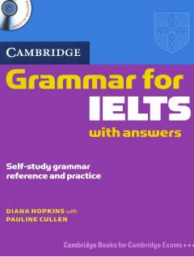

CGIELTS imtihoni uchun mo'ljallangan ingliz tili grammatikasi qo'llanmasi.
Ushbu qo'llanma IELTS imtihoniga tayyorgarlik ko'rayotganlar uchun mo'ljallangan bo'lib, ingliz tili grammatikasini o'rganish va amalda qo'llash uchun qulay mashqlarni o'z ichiga oladi. Kitobda o'z-o'zidan mustaqil shug'ullanish uchun javoblari bilan birga batafsil grammatik tushuntirishlar berilgan. Diana Hopkins va Pauline Cullen tomonidan yozilgan ushbu kitob imtihon talablariga mos ravishda tuzilgan.